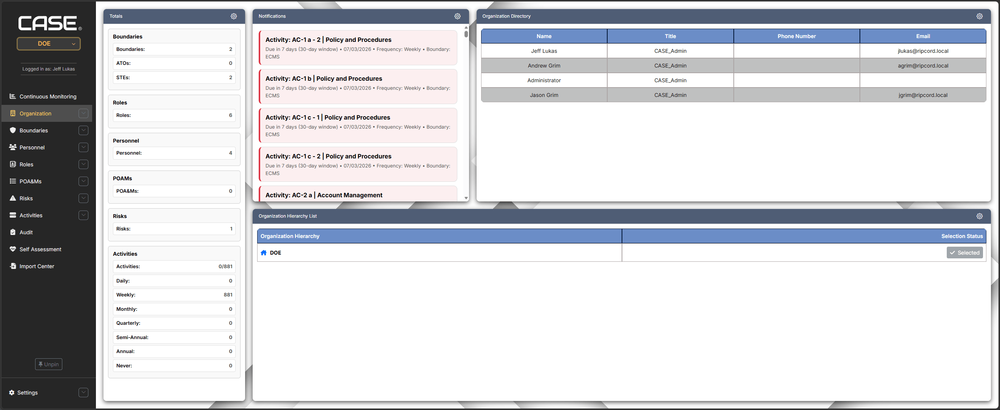
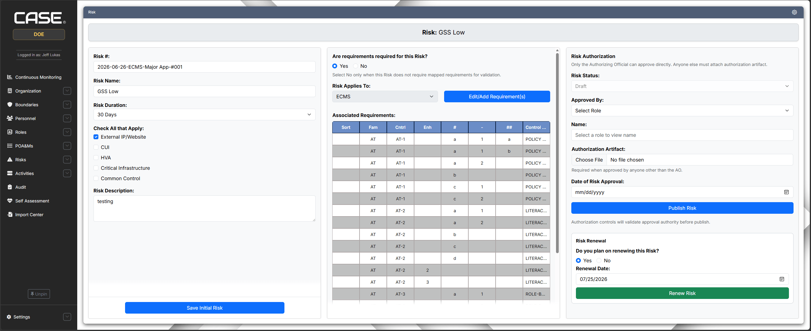
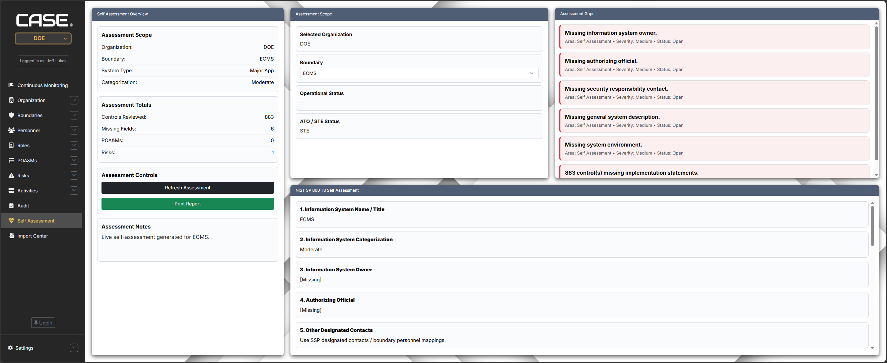
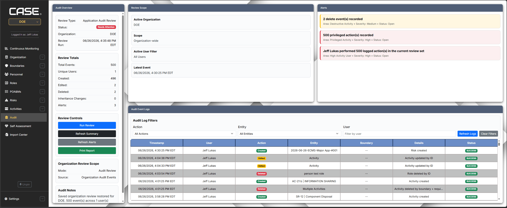

Problem
The challenge
The application supported complex enterprise compliance workflows, but the user experience needed modernization. The interface relied heavily on static pages and simple containers, making it harder for users to understand status, navigate between modules, and act on the data connected to a selected organization or boundary.
Role
My contribution
I redesigned major areas of the application interface and helped extend the software into a more connected, boundary-aware platform. My work included UI modernization, multi-pane dashboard layouts, SQL-backed data views, user workflows, audit logging, assessment tools, and visual reporting.
Core Improvement
Boundary-first automation
A major improvement was creating a boundary-first experience. When the active organization or boundary changed in the sidebar, the application data updated throughout the dashboard and related pages. This helped users work from the selected boundary context instead of navigating through disconnected screens.

Dashboard
Dashboard modernization
I extended the dashboard from simple outlined panels into a multi-pane interface with contextual totals, compliance attributes, donut charts, status indicators, and boundary-aware data. The goal was to make complex compliance information easier to scan and understand.

New Feature
Organization Directory
I turned an unused placeholder area into an Organization Directory that displays personnel and role information. This gave users a clearer way to understand who was connected to the active organization and improved the usefulness of the organization page.

Workflow Redesign
Risk management redesign
I redesigned the risk workflow into a more organized interface with separate areas for risk details, requirement mapping, authorization, approval, and renewal. This made the page easier to understand and helped guide users through a more complex workflow.

New Module
Activity Management
I created an Activity Management page that did not previously exist. The module allowed users to manage recurring activities, view schedule frequencies, track completion status, and update activity records from a centralized interface.

Security Functionality
Assessment and audit functionality
I also built features that supported security and compliance workflows. The assessment tool gave organizations a way to evaluate themselves against a NIST 800-style process, while the audit logging feature tracked important system activity including logons, creates, edits, deletes, and logoffs.


Technical Highlights
Technical environment
- HTML, CSS, JavaScript, and Bootstrap for front-end development.
- Python and Flask for application structure and back-end workflows.
- SQL-backed data views and boundary-aware application data.
- Dynamic dashboards using contextual metrics, charts, and status indicators.
- Authentication-related workflows, audit logging, and security-focused features.
Result
Impact
The application evolved from a set of simpler pages into a more connected enterprise platform with improved navigation, visual reporting, workflow organization, auditability, and contextual data presentation. The modernization made complex compliance workflows easier to understand and gave the product a stronger foundation for continued development.
Reflection
What I learned
This project strengthened my ability to think across the full software experience: user interface design, application structure, database behavior, authentication, compliance workflows, auditability, maintainability, and secure development practices.